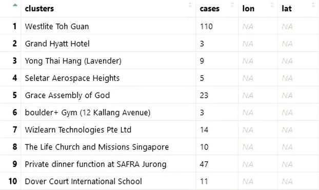
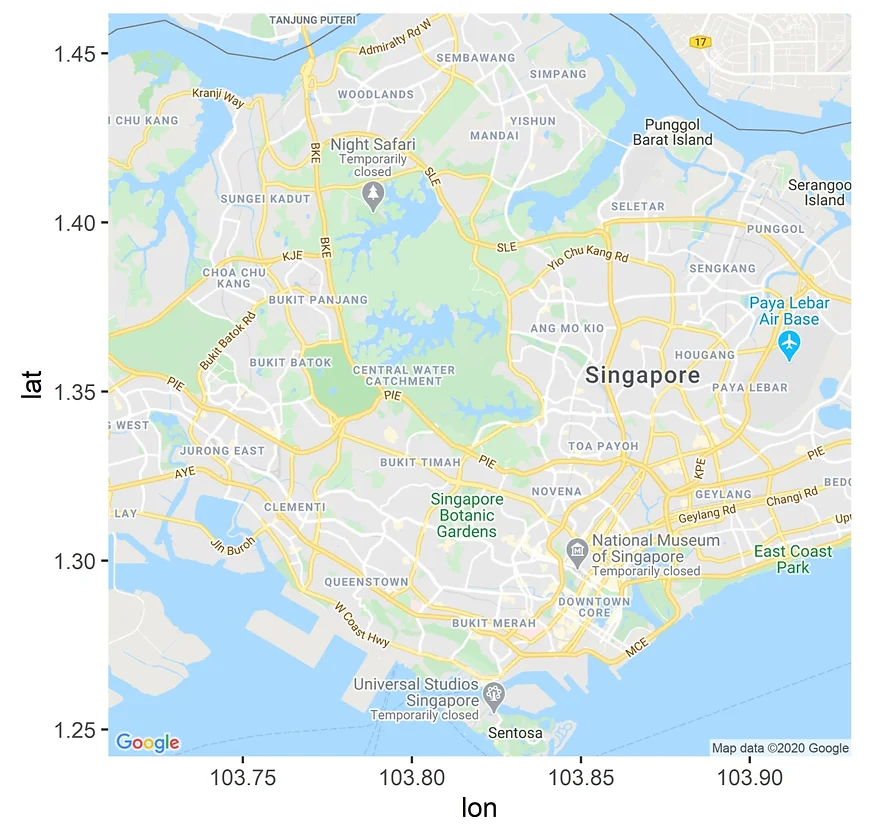
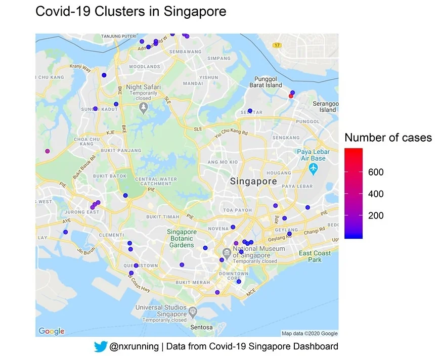

Spatial visualisation with ggmap: Covid-19 clusters in Singapore
Contact tracing plays a key role in infectious disease management, and related cases form a cluster. Since the coronavirus outbreak, several clusters have formed all over Singapore. This blog post documents my attempt to visualise the clusters on the Singapore map using R programming language.
Required Tools
library(rvest)
library(ggplot2)
library(ggmap)Three libraries are required for this project. rvest does the web scraping and ggplot2 is required for graph plotting. More importantly, ggmap helps us to conveniently locate the coordinates of each cluster address with the geocode function.
Google Maps API
register_google(key = "insert your API key here")First, we need to register an authorised Google API key in order to use the geocode function. You may register for your free API key over here.
Cluster List
The list of clusters used in this blog post was from the Covid-19 Singapore Dashboard created by Upcode Academy. The dashboard displays several visualisations on data related to the pandemic outbreak in Singapore. On the bottom right of the page, we could see the clusters and their respective number of cases. Data on the cluster list was scraped through the use of rvest package. The web scraping process is similar to the code I have documented in my previous blogpost.

A total of 47 clusters was scraped from the dashboard and organised into a dataframe. The figure above presents the name of each cluster and its respective number of cases. The list includes clusters that were identified early on during the outbreak (e.g. Yong Thai Hang medical shop, Grand Hyatt Hotel) as well as the foreign worker dormitories, where numbers have skyrocketed during the last 2 months (e.g. S11 Dormitory). Unfortunately, the numbers for certain clusters are not updated (especially for the dormitories). Nevertheless, it contains majority of the local clusters identified so far.
In order to plot each cluster on the map, we require the coordinates of each cluster address. Google identifies each address by its latitude and longitude position, which we can conveniently retrieve via the geocode function. Before doing this, we had to tidy up some of these cluster names in order to better locate them. For example, specifying “Grand Hyatt Hotel Singapore” instead of “Grand Hyatt Hotel” returns the local coordinates instead of a foreign location. Editing of all cluster names can be found in the full code.
A for-loop was then used to extract the coordinate positions for each cluster and appended to the data frame.
# Computing latitude and longitude of each location
for (i in 1:nrow(cluster_df)) {
cluster_name = cluster_df[i, c("clusters")]
cluster_geocode = geocode(cluster_name)
cluster_df[i, c("lon")] <- cluster_geocode$lon
cluster_df[i, c("lat")] <- cluster_geocode$lat
}Singapore Map
# Locating the latitude and longitude position of Singapore
# Lon = 103.8198, Lat = 1.352083
singapore_city <- geocode("Singapore")
# Retrieves the map image of the location
singapore_map <- get_map(singapore_city, zoom = 12, maptype = "roadmap")
# Visualising the map
ggmap(singapore_map)The map visualisation encompasses plotting each cluster on the map. Hence, we need to prepare the background map first. The coordinates of the map were retrieved through the geocode function. Next, the get_map function helps to get the image of the map. We could specify the amount of zoom as well as the map type. There are several map types, and “roadmap” represents the typical google map we see. Lastly, ggmap function helps us to visualise the map (see below).

Visualising the clusters
# Map the clusters on singapore map
ggmap(singapore_map,
base_layer = ggplot(data = cluster_df,
aes(x=lon, y = lat, color = cases))) +
geom_point(size = 1.5,
alpha = 0.8)+
labs(title = "Covid-19 Clusters in Singapore",
caption = "Data from Covid-19 Singapore Dashboard",
color = "Number of cases")+
scale_colour_gradient(low = "blue", high = "red", na.value = NA)+
theme_void()Next, visualisation of the clusters was done by simply adding the scatterplot layer to the map layer. Specifying the color to be dependent on the number of cases helps to differentiate the magnitude of the clusters. You may set the gradient colours using scale_colour_gradient. In this case, most clusters are relatively small (< 50) except the foreign worker dormitories. Unfortunately, as mentioned earlier, the numbers for the dormitories are not updated. You may see the final plot below. Do take note that certain clusters are missing from the plot due to the zoom size of the map selected.

Full code for this article can be accessed through my github.